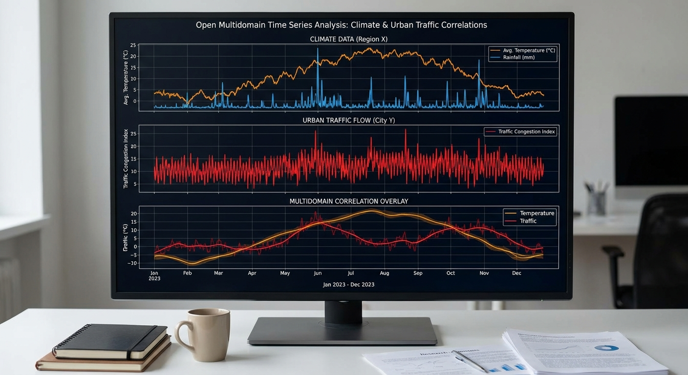

Topic 12
Open Multidomain Time Series
Hard
+1.5 Bonus Points

Topic 12 – Open Multidomain Time Series (Custom Advanced Topic)
Level: Hard Goal: Choose a series from a curated collection and design a custom forecasting/classification problem.Collection
- Source: Open Time Series Datasets – GitHub
- Link: https://github.com/liaoyuhua/open-time-series-datasets
Download & Load Instructions
- Open the GitHub link above.
- Find a dataset (e.g., airline passengers, air pollution, traffic).
- Click file → "Download" or "Raw" and save as CSV to
data/open_ts/.
Data Loading (Example)
import pandas as pd
df = pd.read_csv("data/open_ts/example.csv") # adjust
df["Date"] = pd.to_datetime(df["Date"]) # adapt column name
df = df.set_index("Date").sort_index()Implementation Steps
1. Dataset Selection
- Browse the open time series collection
- Select a dataset that interests you
- Consider:
- Data availability and quality
- Problem complexity
- Domain knowledge
- Research questions
2. Problem Formulation
- Define clear objectives:
- Forecasting (univariate or multivariate)
- Classification
- Anomaly detection
- Pattern recognition
- Formulate research questions
- Define success metrics
3. Data Exploration
- Load and inspect selected dataset
- Understand data structure and variables
- Examine data quality (missing values, outliers)
- Analyze data frequency and time range
- Explore domain-specific characteristics
4. Exploratory Data Analysis (EDA)
- Plot time series
- Identify trends, seasonality, cycles
- Perform time series decomposition
- Calculate and visualize ACF/PACF
- Analyze relationships between variables (if multivariate)
- Apply domain knowledge
5. Data Preprocessing
- Handle missing values appropriately
- Detect and handle outliers
- Apply transformations (log, differencing) if needed
- Test for stationarity
- Prepare data for modeling
6. Model Building
- Classical Methods:
- ARIMA/SARIMA models
- Exponential smoothing
- Machine Learning:
- Feature engineering (lags, rolling stats, calendar features)
- Tree-based models (Random Forest, XGBoost)
- Linear models with features
- Deep Learning (optional):
- LSTM/GRU networks
- CNN for time series
- Hybrid Approaches:
- Combine multiple methods
- Ensemble forecasts
7. Model Evaluation
- Design appropriate train/validation/test splits
- Use time series cross-validation
- Calculate relevant metrics
- Compare multiple approaches
- Analyze model performance
8. Advanced Analysis (Customize Based on Problem)
- If Forecasting:
- Generate future forecasts
- Analyze forecast uncertainty
- Compare forecast horizons
- If Classification:
- Build classification models
- Evaluate classification performance
- Analyze feature importance
- If Anomaly Detection:
- Detect anomalies
- Analyze anomaly patterns
- Validate detections
9. Interpretation and Discussion
- Interpret results in domain context
- Discuss implications
- Identify limitations
- Suggest future work
- Compare with existing literature
Expected Deliverables
- Problem Definition:
- Clear problem statement
- Research questions
- Success criteria
- EDA Report:
- Comprehensive data exploration
- Visualizations
- Domain-specific insights
- Model Results:
- Multiple model approaches
- Performance comparison
- Best model selection
- Detailed results
- Code:
- Complete, well-documented notebook
- Reusable functions
- Clear structure
- Discussion:
- Interpretation of results
- Domain insights
- Limitations and future work
Tips
- Choose a dataset that matches your interests and skill level
- Start with a clear problem definition
- Apply domain knowledge throughout
- Try multiple approaches and compare
- Document all decisions and rationale
- Consider both classical and ML methods
- Use appropriate evaluation metrics for your problem
- Interpret results in domain context
- This is an opportunity to be creative and explore
- Consider real-world applications and implications
- Consult domain literature for context
- Think about what makes your analysis unique or valuable
Getting Started
This topic includes:
- README.md - Detailed implementation guide (this page)
- starter.ipynb - Jupyter notebook with installation and data loading code
- Featured image - Visual representation of the topic
Navigate to the Topic/12.Open_Time_Series/ directory to access all resources.